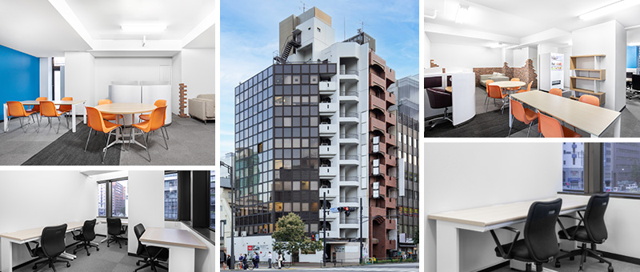
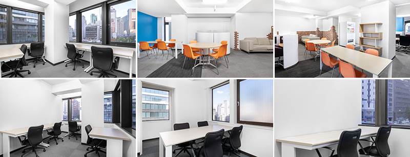

西新橋のレンタルオフィス｜Openoffice：東京・大阪をはじめ全国に50拠点以上
- 【個室レンタルオフィス】オープンオフィス HOME
- オープンオフィス西新橋
【個室レンタルオフィス】オープンオフィス 西新橋
丸の内、有楽町、銀座、品川に連なるビジネス街として発達し、旧来より大企業のオフィスが多く存在する信頼が高い住所に、オープンオフィス西新橋があります。丸の内、品川、虎ノ門などのビジネス街を網羅できるビジネスの拠点となります。

オープンオフィス西新橋周辺のMap
オープンオフィス西新橋の住所・アクセス
住所:
東京都港区新橋4-31-3第3名和ビル1F−9F
空港からのアクセス:
羽田空港から芝パークホテルまでリムジンバスで約60分
羽田空港から浜松町・新橋経由で約30分
電車からのアクセス:
JR・東京メトロ、都営地下鉄『新橋駅』烏森口より徒歩7分、
都営地下鉄三田線『内幸町駅』から徒歩5分、『御成門駅』から徒歩5分
お車でのアクセス：
日比谷通り、環状二号線の交差点「新橋４丁目交差点」角
オープンオフィス西新橋の特長
- 虎ノ門ヒルズのオープンで注目されるエリア
- 新橋駅、内幸町駅、御成門駅の３駅利用可能
- 環状二号線と日比谷通りが交わる、わかりやすいロケーション
- 新規ビジネスを信頼ある住所でサポート
- 24時間入退館可能

オープンオフィス西新橋が提供するオフィスサービス
-

高速インターネット
-

カラーレーザーコピー
専用のカードでコピーが出来ます -

ICカードキー
セキュリティを向上させています -

ミーティングルーム
インターネットで予約していただけます -

Wi-Fi完備

ネットワークプリンタ・スキャナ部屋のパソコンで操作できます
オープンオフィス西新橋近隣のスポット
銀行
三井住友銀行
三菱東京UFJ銀行
みずほ銀行
レストラン
割烹 室井
トロワフレーシュ
鮨 くわ野
ホテル
アンダーズ東京
コンラッド東京
第一ホテル
レジャー
新橋フィットネススタジオ
余暇施設
虎ノ門ヒルズフォーラム
ニッショーホール
リージャスグループのご案内
リージャス・グループは、柔軟なワークスペースを提供する世界最大の企業です。そのネットワークは世界120カ国1,100都市、3300拠点に及びます。会員数は250万人で、業界で成功を収める大小様々な企業や起業家の方々にご利用いただいています。
リージャスは、個室タイプのレンタルオフィス、コワーキングスペースなど多彩なオフィスプラン、近年需要が高まるモバイルワークやバーチャルオフィス、障害復旧サービスの提供を通じ、お客様が予算やワークスタイルに合わせて仕事を行うことができる環境を提供いたします。
p class="both pdB20">